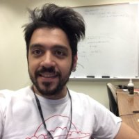

|  |
|
|---|

Research
Guray Ozen is a compiler software engineer in PGI's GPU compiler team at NVIDIA. Before joining NVIDIA, he worked in programming models team at Barcelona Supercomputing Center (BSC) from 2013 to 2018 while doing his Ph.D. in Universitat Politecnica de Catalunya – BarcelonaTech. His personal research focus is on the interaction of the compilers with new computer architectures.
He is currently focusing on compilers and runtimes for GPUs and heterogeneous systems, primarily targeting auto code generation techniques for GPU accelerators.
Research interests: compiler level code analysis, code generation and optimization, exposing application structure for optimization.
Work
- NVIDIA, , Compiler Software Engineer, PGI GPU Compiler Group, 2017 - present
- IBM T.J. Watson Research Center, Short-term Researcher, Advanced Compilers Group, Yorktown Heights, New York, USA, 2016
- Barcelona Supercomputing Center, Researcher Assistant, Barcelona, Spain, 2013 - 2017
Education
- PhD in Computer Architecture, 2018 - BarcelonaTech, Universitat Politècnica de Catalunya (UPC), Spain.
- MSc High-Performance Computing, 2014 - BarcelonaTech, Universitat Politècnica de Catalunya (UPC), Spain
- BSc in Computer Science Engineering, 2010 - Dokuz Eylul University, Turkey
Publications
- OpenMP GPU Offload in Flang and LLVM
- LLVM @ Supercomputing 2018, Guray Ozen, Simone Atzeni, Michael Wolfe, Annemarie Southwell, Gary Klimowicz
- [PDF]
- Compiler and Runtime Based Parallelization and Optimization for GPUs
- Collective Dynamic Parallelism for Directive Based GPU Programming Languages and Compilers
- Offloading Support for OpenMP in Clang and LLVM
- Multiple Target Task Sharing Support for the OpenMP Accelerator Model
- Exploring Dynamic Parallelism in OpenMP
- On the Roles of the Programmer, the Compiler and the Runtime System When Programming Accelerators in OpenMP
- MACC: Mercurium ACCelerator Model
Talks in Conferences
- Multi-target Task-Based Programming Model Exploiting OpenACC GPU Kernel
- GPU Technology Conference 2017, Silicon Valley
- [SLIDES]
-